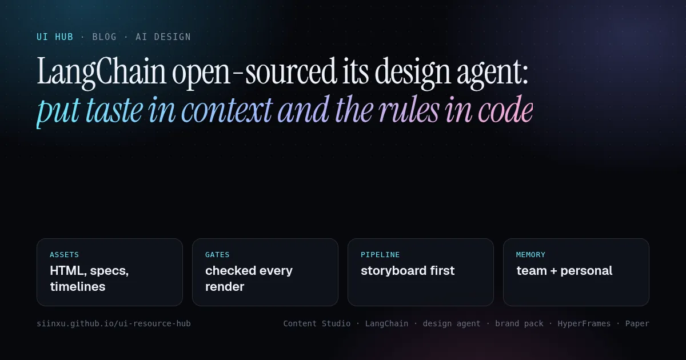
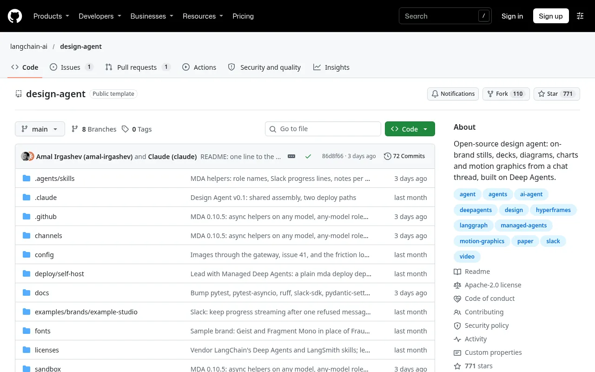
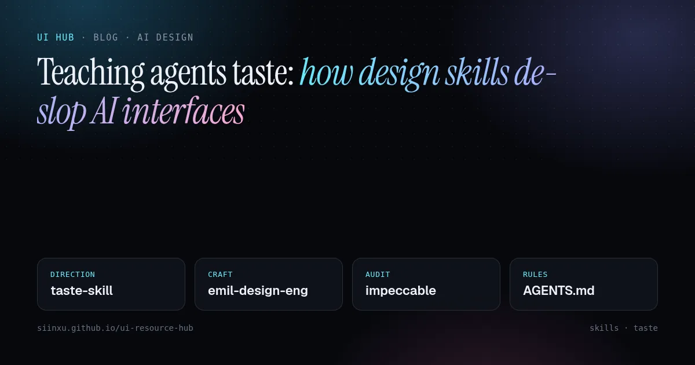
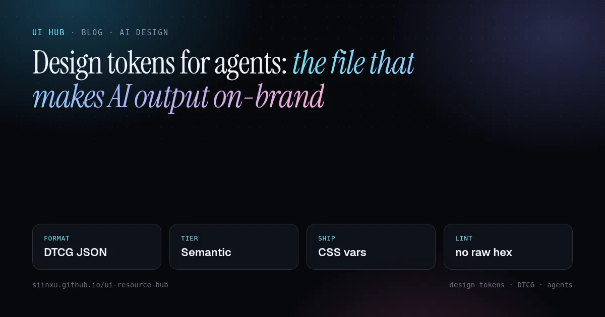

LangChain open-sourced its design agent: put taste in context and the rules in codeLangChainがデザインエージェントをオープンソース化：センスは文脈に、ルールはコードにLangChain이 디자인 에이전트를 오픈소스로 공개: 취향은 컨텍스트에, 규칙은 코드에LangChain membuka sumber ejen reka bentuknya: letak cita rasa dalam konteks, peraturan dalam kodLangChain mở mã nguồn agent thiết kế của mình: gu thẩm mỹ đặt vào ngữ cảnh, quy tắc đặt vào codeLangChain ouvre le code de son agent de design : le goût dans le contexte, les règles dans le codeLangChain libera su agente de diseño: el gusto en el contexto, las reglas en el códigoLangChain veröffentlicht seinen Design-Agent als Open Source: Geschmack in den Kontext, Regeln in den Code
Content Studio, the Slack design agent LangChain says has shipped more than 3,000 assets for its own team, is open source (Apache 2.0) and got a fresh push this week. The interesting part is not the model but how the work is split: every asset is code, design knowledge is divided into skills, a wiki, deterministic gates and memory, cheap storyboards come before expensive renders, and people point at a shared canvas instead of describing positions in chat. What to copy even if you never fork it, a checklist and a prompt for turning your brand guide into a brand pack with checks.LangChainが自社チーム向けに3,000点以上の制作物を出したというSlackのデザインエージェントContent Studioは、Apache 2.0のオープンソースで、今週あらためて大きく紹介された。注目すべきはモデルではなく仕事の分け方だ。すべての制作物はコードで、デザイン知識はスキル、Wiki、決定的なチェック、メモリーの4つに分かれ、高価なレンダリングの前に安い絵コンテを作り、チャットで位置を説明する代わりに共有キャンバスで直接指し示す。フォークしなくても真似できる点、チェックリスト、ブランドガイドを「ブランドパック＋チェック」に変えるプロンプト付き。LangChain이 자사 팀을 위해 3,000개 넘는 결과물을 냈다고 밝힌 Slack 디자인 에이전트 Content Studio는 Apache 2.0 오픈소스이며 이번 주 다시 크게 소개됐다. 볼 만한 것은 모델이 아니라 일을 나누는 방식이다. 모든 결과물은 코드이고, 디자인 지식은 스킬, 위키, 결정적 검사, 메모리 네 가지로 나뉘며, 비싼 렌더링 전에 싼 스토리보드를 먼저 만들고, 채팅으로 위치를 설명하는 대신 공유 캔버스에서 직접 가리킨다. 포크하지 않아도 따라 할 점, 체크리스트, 브랜드 가이드를 "브랜드 팩 + 검사"로 바꾸는 프롬프트 포함.Content Studio, ejen reka bentuk Slack yang menurut LangChain telah menghasilkan lebih 3,000 aset untuk pasukannya sendiri, adalah sumber terbuka (Apache 2.0) dan diketengahkan semula minggu ini. Yang menarik bukan modelnya tetapi cara kerja dibahagikan: setiap aset ialah kod, pengetahuan reka bentuk dipecah kepada kemahiran, wiki, semakan deterministik dan memori, papan cerita murah dibuat sebelum render yang mahal, dan orang menunjuk terus pada kanvas bersama dan bukan menerangkan kedudukan dalam sembang. Apa yang patut ditiru walaupun anda tidak fork, senarai semak dan prompt untuk menukar panduan jenama kepada pek jenama dengan semakan.Content Studio, agent thiết kế trên Slack mà LangChain cho biết đã làm hơn 3.000 tài sản cho chính đội của họ, là mã nguồn mở (Apache 2.0) và được đẩy mạnh trở lại trong tuần này. Điều đáng xem không phải là model mà là cách chia việc: mọi tài sản đều là code, kiến thức thiết kế được tách thành skill, wiki, các bước kiểm tra tất định và bộ nhớ, storyboard rẻ làm trước khi render tốn kém, và mọi người chỉ thẳng lên canvas dùng chung thay vì tả vị trí trong chat. Những gì nên học theo dù không fork, kèm checklist và prompt biến brand guide thành brand pack có kiểm tra.Content Studio, l’agent de design sur Slack qui, selon LangChain, a livré plus de 3 000 visuels pour sa propre équipe, est open source (Apache 2.0) et a été remis en avant cette semaine. L’intérêt n’est pas le modèle mais le partage du travail : chaque visuel est du code, le savoir de design est réparti entre skills, wiki, vérifications déterministes et mémoire, des storyboards bon marché passent avant les rendus coûteux, et l’équipe pointe sur un canevas partagé au lieu de décrire des positions dans le chat. Ce qu’il faut copier même sans forker, une checklist et un prompt pour transformer votre charte en brand pack avec contrôles.Content Studio, el agente de diseño en Slack que, según LangChain, ha entregado más de 3.000 piezas para su propio equipo, es de código abierto (Apache 2.0) y recibió un nuevo impulso esta semana. Lo interesante no es el modelo sino el reparto del trabajo: cada pieza es código, el conocimiento de diseño se divide en skills, wiki, comprobaciones deterministas y memoria, los storyboards baratos van antes que los renders caros y la gente señala sobre un lienzo compartido en vez de describir posiciones en el chat. Qué copiar aunque nunca hagas fork, una checklist y un prompt para convertir tu guía de marca en un brand pack con comprobaciones.Content Studio, der Slack-Design-Agent, der laut LangChain mehr als 3.000 Assets für das eigene Team geliefert hat, ist Open Source (Apache 2.0) und wurde diese Woche erneut prominent vorgestellt. Spannend ist nicht das Modell, sondern die Arbeitsteilung: Jedes Asset ist Code, Designwissen ist auf Skills, Wiki, deterministische Prüfungen und Gedächtnis verteilt, günstige Storyboards kommen vor teuren Renderings, und das Team zeigt auf einer gemeinsamen Canvas, statt Positionen im Chat zu beschreiben. Was sich auch ohne Fork übernehmen lässt, eine Checkliste und ein Prompt, der Ihren Brand Guide in ein Brand Pack mit Prüfungen verwandelt.

本文は英語で表示しています。
본문은 영어로 표시됩니다.
Kandungan dipaparkan dalam bahasa Inggeris.
Nội dung hiển thị bằng tiếng Anh.
Le corps de l’article est en anglais.
El cuerpo del artículo está en inglés.
Der Beitragstext ist auf Englisch.
LangChain’s design agent, Content Studio, is open source as langchain-ai/design-agent under the Apache 2.0 licence. The repository first appeared in October alongside a long build post, and this week LangChain pushed it again: on 23 November the README gained a launch video and the company re-posted the project on X (“ICYMI: It’s open source”), and Geeky Gadgets wrote it up on 25 November. It is a Slack agent: someone mentions it in a thread with a brief and attachments, and finished files come back to the same thread. LangChain says it has produced more than 3,000 assets since August, including more than 80 slide decks, that three in four requests now come from outside marketing, and that the median request costs about 50 cents in model spend, down from about $8 in mid-September.

The numbers are LangChain’s own, so treat them as a claim. The part worth studying is the structure, because it answers a question most teams hit after their first “brand skill”: why does an agent that knows our colours and fonts still produce work that looks like everybody else’s? LangChain shows the same prompt given to a local coding agent with a brand skill and to Content Studio. The first got the logo lockup, the font and the primary colour wrong. The model was not the difference. The difference was how much of the brief the agent had to fill in by itself, and with what.
What is in the repo
- Every asset is code. A slide is an HTML page, a chart is a data spec, a video is an animation timeline. Each Slack thread gets its own sandbox (a Linux machine with Chrome, FFmpeg, HyperFrames, D2 and the brand fonts), and the brief, plan, scene code, audio and renders live in one project folder. Moving one element earlier is a changed value and a re-render, not a new generation.
- Four kinds of knowledge, kept apart. Skills say how to do a specific job; a router skill, mostly one table, maps each kind of ask to a workflow and keeps small edits out of the big process. The wiki holds the craft and the brand facts, and skills link to it instead of copying it. Anything measurable is a gate, a deterministic check in code: colours, fonts, contrast, sizes and chart maths are checked on every render. Memory holds what people teach it.
- Memory in two layers. “Never use orange on LinkedIn” is saved in the same turn, either to team memory or to one person’s memory, and team standards win. Each layer has an index that loads on every run; LangChain capped it at 200 lines after an early version grew to 500K tokens. After each job a
learn_from_jobstep writes up to five evidence-backed notes against the skill it used, and later jobs rate them. - Cheap before expensive. A storyboard frame renders in about 50 ms; a second of finished film takes 8 to 40 seconds. So films go storyboard, animatic, production. When the agent sometimes skipped a review to save time, LangChain moved the order into code: assembly waits until every part passes.
- Point, don’t describe. A Slack thread is linear and a storyboard is spatial, so the agent drafts on a shared Paper canvas through Paper’s MCP server, where people compare directions, comment on a frame or edit it themselves. Lovable added Paper as a chat connector on 23 November, so this shared-canvas pattern is spreading beyond one team.
- Long jobs that stay steerable. The main agent splits big jobs between background subagents and keeps the thread updated with a plan, live status, spend and an approval step before anything goes public. One overnight job reskinned a 52-slide deck by doing three sample slides first, then numbered batches for approval.

Our take: the rules that last are the ones you can check
The most useful sentence in LangChain’s write-up is about where things live: the order that must always hold lives in code, and the judgment stays in the prompt. Their first harness did the opposite. It shipped 115 reusable components and a lot of instructions to make up for what the model could not yet do, and the output stayed on brand but repeated the same layouts. After a model upgrade they removed most of the hard-coded rules, kept the design principles, and got more variety. Rules that patch a model’s weaknesses expire. Brand facts, principles and countable checks do not.
That gives a clean test for anything in your own agent setup. If a rule can be counted (this hex value, this font, contrast at least 4.5:1, no title case, the chart axis starts at zero), make it a gate that fails the render. If it is a fact (logo lockups, primary versus secondary colours, voice), put it in one brand pack that every skill links to. If it is judgment (is the idea strong, does the message land), write the reasoning down as a principle with an example and let the model apply it. LangChain’s evals follow the same split: they grade delivered files, exact copy and tool-call order without a model judging taste.
Some caution before forking. Managed Deep Agents is in public beta on LangSmith, the first sandbox build takes 10 to 15 minutes, the full eval set costs about $120 per model, and the setup leans on HyperFrames for video and Paper Desktop for the canvas. The bigger limit is your brand. If your guide is a logo and two hex codes, the agent will still fill the gaps with defaults. Most of the work is writing down decisions your designers make without thinking.
Set up a design agent the same way
- Pick a code format per asset type. HTML and CSS for stills and slides, a chart spec for data, a timeline for motion. Never accept a flat image as the master file.
- Write the brand pack once. Tokens, fonts, logo lockups with clear space, which colour is primary, voice and a short list of things the brand never does. Skills link to it; nothing copies it.
- Turn every countable rule into a gate. Run it after every render and fail loudly. Start with off-palette colours, wrong fonts, contrast, minimum text size, canvas size and capitalisation.
- Make the agent look before it posts. Render, inspect the image, fix, then deliver. A file that was never looked at is not done.
- Route small asks away from the big pipeline. A resize should not trigger a storyboard; a launch film should not skip one.
- Keep memory small and layered. Team rules over personal preferences, one index per layer, and a regular pass that drops notes which did not hold up.
- Put feedback where it can point. A shared canvas or at least numbered frames, so “the second card, left edge” is not the main way to give notes.

Design-agent checklist
- Can every delivered asset be reopened as code and changed with one edit and a re-render?
- Is there exactly one brand pack, and do skills link to it instead of repeating it?
- Do colours, fonts, contrast, sizes and chart maths fail the render automatically when they are wrong?
- Does the agent look at each render before posting it?
- Do expensive jobs start with a cheap draft that a person approves, enforced in code rather than in the prompt?
- Is memory split into team and personal layers with a capped index?
- Is there an approval step before anything is published, and can people steer a long job mid-run?
- Have you deleted the workaround rules you wrote for an older model?
# Paste into a coding agent, with our brand guide and website attached
Turn our brand guide into a brand pack and a set of render gates.
1. brand/tokens.json: colours with roles (primary, secondary, surface, ink),
font families and weights, spacing scale, radii.
2. brand/brand.md: logo lockups and clear space, which colour leads,
voice in five rules, and a "never" list. Facts only, no workarounds.
3. gates/: one script per countable rule. Fail on off-palette colours,
fonts outside the pack, text contrast under 4.5:1, text under <min>px,
wrong canvas size, Title Case in headings.
4. A render step: build the asset from code, screenshot it, run every gate,
and print each failure with the element that caused it.
List anything in the guide you could not turn into a fact or a check,
so a designer can write it down as a principle.UI Hub related reading: measuring AI slop, linting agents onto your design system, asking for editable designs, not pictures, and design agents with memory.
LangChain’s design agent, Content Studio, is open source as langchain-ai/design-agent under the Apache 2.0 licence. The repository first appeared in October alongside a long build post, and this week LangChain pushed it again: on 23 November the README gained a launch video and the company re-posted the project on X (“ICYMI: It’s open source”), and Geeky Gadgets wrote it up on 25 November. It is a Slack agent: someone mentions it in a thread with a brief and attachments, and finished files come back to the same thread. LangChain says it has produced more than 3,000 assets since August, including more than 80 slide decks, that three in four requests now come from outside marketing, and that the median request costs about 50 cents in model spend, down from about $8 in mid-September.
The numbers are LangChain’s own, so treat them as a claim. The part worth studying is the structure, because it answers a question most teams hit after their first “brand skill”: why does an agent that knows our colours and fonts still produce work that looks like everybody else’s? LangChain shows the same prompt given to a local coding agent with a brand skill and to Content Studio. The first got the logo lockup, the font and the primary colour wrong. The model was not the difference. The difference was how much of the brief the agent had to fill in by itself, and with what.
What is in the repo
- Every asset is code. A slide is an HTML page, a chart is a data spec, a video is an animation timeline. Each Slack thread gets its own sandbox (a Linux machine with Chrome, FFmpeg, HyperFrames, D2 and the brand fonts), and the brief, plan, scene code, audio and renders live in one project folder. Moving one element earlier is a changed value and a re-render, not a new generation.
- Four kinds of knowledge, kept apart. Skills say how to do a specific job; a router skill, mostly one table, maps each kind of ask to a workflow and keeps small edits out of the big process. The wiki holds the craft and the brand facts, and skills link to it instead of copying it. Anything measurable is a gate, a deterministic check in code: colours, fonts, contrast, sizes and chart maths are checked on every render. Memory holds what people teach it.
- Memory in two layers. “Never use orange on LinkedIn” is saved in the same turn, either to team memory or to one person’s memory, and team standards win. Each layer has an index that loads on every run; LangChain capped it at 200 lines after an early version grew to 500K tokens. After each job a
learn_from_jobstep writes up to five evidence-backed notes against the skill it used, and later jobs rate them. - Cheap before expensive. A storyboard frame renders in about 50 ms; a second of finished film takes 8 to 40 seconds. So films go storyboard, animatic, production. When the agent sometimes skipped a review to save time, LangChain moved the order into code: assembly waits until every part passes.
- Point, don’t describe. A Slack thread is linear and a storyboard is spatial, so the agent drafts on a shared Paper canvas through Paper’s MCP server, where people compare directions, comment on a frame or edit it themselves. Lovable added Paper as a chat connector on 23 November, so this shared-canvas pattern is spreading beyond one team.
- Long jobs that stay steerable. The main agent splits big jobs between background subagents and keeps the thread updated with a plan, live status, spend and an approval step before anything goes public. One overnight job reskinned a 52-slide deck by doing three sample slides first, then numbered batches for approval.
Our take: the rules that last are the ones you can check
The most useful sentence in LangChain’s write-up is about where things live: the order that must always hold lives in code, and the judgment stays in the prompt. Their first harness did the opposite. It shipped 115 reusable components and a lot of instructions to make up for what the model could not yet do, and the output stayed on brand but repeated the same layouts. After a model upgrade they removed most of the hard-coded rules, kept the design principles, and got more variety. Rules that patch a model’s weaknesses expire. Brand facts, principles and countable checks do not.
That gives a clean test for anything in your own agent setup. If a rule can be counted (this hex value, this font, contrast at least 4.5:1, no title case, the chart axis starts at zero), make it a gate that fails the render. If it is a fact (logo lockups, primary versus secondary colours, voice), put it in one brand pack that every skill links to. If it is judgment (is the idea strong, does the message land), write the reasoning down as a principle with an example and let the model apply it. LangChain’s evals follow the same split: they grade delivered files, exact copy and tool-call order without a model judging taste.
Some caution before forking. Managed Deep Agents is in public beta on LangSmith, the first sandbox build takes 10 to 15 minutes, the full eval set costs about $120 per model, and the setup leans on HyperFrames for video and Paper Desktop for the canvas. The bigger limit is your brand. If your guide is a logo and two hex codes, the agent will still fill the gaps with defaults. Most of the work is writing down decisions your designers make without thinking.
Set up a design agent the same way
- Pick a code format per asset type. HTML and CSS for stills and slides, a chart spec for data, a timeline for motion. Never accept a flat image as the master file.
- Write the brand pack once. Tokens, fonts, logo lockups with clear space, which colour is primary, voice and a short list of things the brand never does. Skills link to it; nothing copies it.
- Turn every countable rule into a gate. Run it after every render and fail loudly. Start with off-palette colours, wrong fonts, contrast, minimum text size, canvas size and capitalisation.
- Make the agent look before it posts. Render, inspect the image, fix, then deliver. A file that was never looked at is not done.
- Route small asks away from the big pipeline. A resize should not trigger a storyboard; a launch film should not skip one.
- Keep memory small and layered. Team rules over personal preferences, one index per layer, and a regular pass that drops notes which did not hold up.
- Put feedback where it can point. A shared canvas or at least numbered frames, so “the second card, left edge” is not the main way to give notes.
Design-agent checklist
- Can every delivered asset be reopened as code and changed with one edit and a re-render?
- Is there exactly one brand pack, and do skills link to it instead of repeating it?
- Do colours, fonts, contrast, sizes and chart maths fail the render automatically when they are wrong?
- Does the agent look at each render before posting it?
- Do expensive jobs start with a cheap draft that a person approves, enforced in code rather than in the prompt?
- Is memory split into team and personal layers with a capped index?
- Is there an approval step before anything is published, and can people steer a long job mid-run?
- Have you deleted the workaround rules you wrote for an older model?
# Paste into a coding agent, with our brand guide and website attached
Turn our brand guide into a brand pack and a set of render gates.
1. brand/tokens.json: colours with roles (primary, secondary, surface, ink),
font families and weights, spacing scale, radii.
2. brand/brand.md: logo lockups and clear space, which colour leads,
voice in five rules, and a "never" list. Facts only, no workarounds.
3. gates/: one script per countable rule. Fail on off-palette colours,
fonts outside the pack, text contrast under 4.5:1, text under <min>px,
wrong canvas size, Title Case in headings.
4. A render step: build the asset from code, screenshot it, run every gate,
and print each failure with the element that caused it.
List anything in the guide you could not turn into a fact or a check,
so a designer can write it down as a principle.UI Hub related reading: measuring AI slop, linting agents onto your design system, asking for editable designs, not pictures, and design agents with memory.
AI promptAIプロンプトAI 프롬프트Prompt AIPrompt cho AIPrompt IAPrompt de IAKI-Prompt
Paste this into Claude, Cursor, v0 or another assistant to apply this post to your own project. Replace the parts in angle brackets.Claude・Cursor・v0 などのAIアシスタントに貼り付けると、この記事の方法をあなたのプロジェクトに適用できます。山括弧の部分は自分の内容に置き換えてください。Claude, Cursor, v0 같은 AI 도우미에 붙여 넣으면 이 글의 방법을 내 프로젝트에 적용할 수 있습니다. 꺾쇠괄호 안은 내 내용으로 바꾸세요.Tampal ke Claude, Cursor, v0 atau pembantu lain untuk menggunakan kaedah artikel ini pada projek anda. Gantikan bahagian dalam kurungan sudut.Dán vào Claude, Cursor, v0 hoặc trợ lý khác để áp dụng bài này cho dự án của bạn. Thay phần trong dấu ngoặc nhọn bằng nội dung của bạn.Collez-le dans Claude, Cursor, v0 ou un autre assistant pour appliquer cet article à votre projet. Remplacez les parties entre chevrons.Pégalo en Claude, Cursor, v0 u otro asistente para aplicar este artículo a tu proyecto. Sustituye lo que está entre corchetes angulares.In Claude, Cursor, v0 oder einen anderen Assistenten einfügen, um diesen Beitrag auf dein Projekt anzuwenden. Teile in spitzen Klammern ersetzen.
You are a senior UI engineer. Apply the article “LangChain open-sourced its design agent: put taste in context and the rules in code” (https://ui.incidental.site/blog/design-agent-taste-in-context-rules-in-code/) to my project.
Key idea: Content Studio, the Slack design agent LangChain says has shipped more than 3,000 assets for its own team, is open source (Apache 2.0) and got a fresh push this week. The interesting part is not the model but how the work is split: every asset is code, design knowledge is divided into skills, a wiki, deterministic gates and memory, cheap storyboards come before expensive renders, and people point at a shared canvas instead of describing positions in chat. What to copy even if you never fork it, a checklist and a prompt for turning your brand guide into a brand pack with checks.
Steps:
1. Read the article and turn its advice into a numbered checklist of concrete, checkable rules.
2. Audit <my page / component / repo> against that checklist; mark each rule PASS or FAIL with file and line.
3. Fix the FAIL items in small batches, using my existing tokens and components. Do not invent APIs; follow the official docs the article links to.
4. Finish with a short list of open questions and anything you could not verify.あなたはシニアUIエンジニアです。記事「LangChainがデザインエージェントをオープンソース化：センスは文脈に、ルールはコードに」（https://ui.incidental.site/blog/design-agent-taste-in-context-rules-in-code/）の方法を私のプロジェクトに適用してください。
要点：LangChainが自社チーム向けに3,000点以上の制作物を出したというSlackのデザインエージェントContent Studioは、Apache 2.0のオープンソースで、今週あらためて大きく紹介された。注目すべきはモデルではなく仕事の分け方だ。すべての制作物はコードで、デザイン知識はスキル、Wiki、決定的なチェック、メモリーの4つに分かれ、高価なレンダリングの前に安い絵コンテを作り、チャットで位置を説明する代わりに共有キャンバスで直接指し示す。フォークしなくても真似できる点、チェックリスト、ブランドガイドを「ブランドパック＋チェック」に変えるプロンプト付き。
手順：
1. 記事を読み、助言を具体的で確認可能な番号付きチェックリストにする。
2. そのチェックリストで <私のページ / コンポーネント / リポジトリ> を監査し、各項目を合格／不合格で示し、ファイルと行番号を書く。
3. 不合格の項目を、既存のトークンとコンポーネントを使って少しずつ修正する。APIを捏造せず、記事がリンクする公式ドキュメントに従う。
4. 最後に未解決の質問と検証できなかった点を挙げる。당신은 시니어 UI 엔지니어입니다. 글 “LangChain이 디자인 에이전트를 오픈소스로 공개: 취향은 컨텍스트에, 규칙은 코드에”(https://ui.incidental.site/blog/design-agent-taste-in-context-rules-in-code/)의 방법을 내 프로젝트에 적용해 주세요.
핵심: LangChain이 자사 팀을 위해 3,000개 넘는 결과물을 냈다고 밝힌 Slack 디자인 에이전트 Content Studio는 Apache 2.0 오픈소스이며 이번 주 다시 크게 소개됐다. 볼 만한 것은 모델이 아니라 일을 나누는 방식이다. 모든 결과물은 코드이고, 디자인 지식은 스킬, 위키, 결정적 검사, 메모리 네 가지로 나뉘며, 비싼 렌더링 전에 싼 스토리보드를 먼저 만들고, 채팅으로 위치를 설명하는 대신 공유 캔버스에서 직접 가리킨다. 포크하지 않아도 따라 할 점, 체크리스트, 브랜드 가이드를 "브랜드 팩 + 검사"로 바꾸는 프롬프트 포함.
단계:
1. 글을 읽고 조언을 구체적이고 확인 가능한 번호 목록으로 정리한다.
2. 그 목록으로 <내 페이지 / 컴포넌트 / 저장소>를 점검하고, 항목마다 통과/실패와 파일·줄 번호를 적는다.
3. 실패 항목을 기존 토큰과 컴포넌트로 조금씩 고친다. API를 지어내지 말고 글에 링크된 공식 문서를 따른다.
4. 마지막으로 남은 질문과 확인하지 못한 내용을 정리한다.Anda jurutera UI kanan. Gunakan kaedah artikel “LangChain membuka sumber ejen reka bentuknya: letak cita rasa dalam konteks, peraturan dalam kod” (https://ui.incidental.site/blog/design-agent-taste-in-context-rules-in-code/) pada projek saya.
Idea utama: Content Studio, ejen reka bentuk Slack yang menurut LangChain telah menghasilkan lebih 3,000 aset untuk pasukannya sendiri, adalah sumber terbuka (Apache 2.0) dan diketengahkan semula minggu ini. Yang menarik bukan modelnya tetapi cara kerja dibahagikan: setiap aset ialah kod, pengetahuan reka bentuk dipecah kepada kemahiran, wiki, semakan deterministik dan memori, papan cerita murah dibuat sebelum render yang mahal, dan orang menunjuk terus pada kanvas bersama dan bukan menerangkan kedudukan dalam sembang. Apa yang patut ditiru walaupun anda tidak fork, senarai semak dan prompt untuk menukar panduan jenama kepada pek jenama dengan semakan.
Langkah:
1. Baca artikel dan jadikan nasihatnya senarai semak bernombor yang konkrit dan boleh disemak.
2. Audit <halaman / komponen / repo saya> dengan senarai itu; tandakan setiap peraturan LULUS atau GAGAL dengan fail dan baris.
3. Baiki item GAGAL sedikit demi sedikit menggunakan token dan komponen sedia ada. Jangan reka API; ikut dokumen rasmi yang dipautkan artikel.
4. Akhiri dengan soalan terbuka dan perkara yang tidak dapat disahkan.Bạn là kỹ sư UI cấp cao. Hãy áp dụng bài viết “LangChain mở mã nguồn agent thiết kế của mình: gu thẩm mỹ đặt vào ngữ cảnh, quy tắc đặt vào code” (https://ui.incidental.site/blog/design-agent-taste-in-context-rules-in-code/) cho dự án của tôi.
Ý chính: Content Studio, agent thiết kế trên Slack mà LangChain cho biết đã làm hơn 3.000 tài sản cho chính đội của họ, là mã nguồn mở (Apache 2.0) và được đẩy mạnh trở lại trong tuần này. Điều đáng xem không phải là model mà là cách chia việc: mọi tài sản đều là code, kiến thức thiết kế được tách thành skill, wiki, các bước kiểm tra tất định và bộ nhớ, storyboard rẻ làm trước khi render tốn kém, và mọi người chỉ thẳng lên canvas dùng chung thay vì tả vị trí trong chat. Những gì nên học theo dù không fork, kèm checklist và prompt biến brand guide thành brand pack có kiểm tra.
Các bước:
1. Đọc bài và biến lời khuyên thành danh sách kiểm tra đánh số, cụ thể, kiểm chứng được.
2. Rà soát <trang / component / repo của tôi> theo danh sách đó; ghi ĐẠT hoặc KHÔNG ĐẠT kèm tệp và dòng.
3. Sửa các mục KHÔNG ĐẠT theo từng đợt nhỏ, dùng token và component sẵn có. Không bịa API; làm theo tài liệu chính thức mà bài viết dẫn tới.
4. Kết thúc bằng các câu hỏi còn mở và những điểm chưa xác minh được.Tu es ingénieur UI senior. Applique l’article « LangChain ouvre le code de son agent de design : le goût dans le contexte, les règles dans le code » (https://ui.incidental.site/blog/design-agent-taste-in-context-rules-in-code/) à mon projet.
Idée clé : Content Studio, l’agent de design sur Slack qui, selon LangChain, a livré plus de 3 000 visuels pour sa propre équipe, est open source (Apache 2.0) et a été remis en avant cette semaine. L’intérêt n’est pas le modèle mais le partage du travail : chaque visuel est du code, le savoir de design est réparti entre skills, wiki, vérifications déterministes et mémoire, des storyboards bon marché passent avant les rendus coûteux, et l’équipe pointe sur un canevas partagé au lieu de décrire des positions dans le chat. Ce qu’il faut copier même sans forker, une checklist et un prompt pour transformer votre charte en brand pack avec contrôles.
Étapes :
1. Lis l’article et transforme ses conseils en une liste numérotée de règles concrètes et vérifiables.
2. Audite <ma page / mon composant / mon dépôt> avec cette liste ; indique OK ou KO pour chaque règle, avec fichier et ligne.
3. Corrige les points KO par petits lots, avec mes tokens et composants existants. N’invente pas d’API ; suis la documentation officielle citée par l’article.
4. Termine par les questions ouvertes et ce que tu n’as pas pu vérifier.Eres un ingeniero de UI sénior. Aplica el artículo “LangChain libera su agente de diseño: el gusto en el contexto, las reglas en el código” (https://ui.incidental.site/blog/design-agent-taste-in-context-rules-in-code/) a mi proyecto.
Idea clave: Content Studio, el agente de diseño en Slack que, según LangChain, ha entregado más de 3.000 piezas para su propio equipo, es de código abierto (Apache 2.0) y recibió un nuevo impulso esta semana. Lo interesante no es el modelo sino el reparto del trabajo: cada pieza es código, el conocimiento de diseño se divide en skills, wiki, comprobaciones deterministas y memoria, los storyboards baratos van antes que los renders caros y la gente señala sobre un lienzo compartido en vez de describir posiciones en el chat. Qué copiar aunque nunca hagas fork, una checklist y un prompt para convertir tu guía de marca en un brand pack con comprobaciones.
Pasos:
1. Lee el artículo y convierte sus consejos en una lista numerada de reglas concretas y comprobables.
2. Audita <mi página / componente / repositorio> con esa lista; marca cada regla como CUMPLE o NO CUMPLE con archivo y línea.
3. Corrige los puntos que no cumplen en lotes pequeños, usando mis tokens y componentes actuales. No inventes APIs; sigue la documentación oficial que enlaza el artículo.
4. Termina con las preguntas abiertas y lo que no pudiste verificar.Du bist Senior-UI-Engineer. Wende den Artikel „LangChain veröffentlicht seinen Design-Agent als Open Source: Geschmack in den Kontext, Regeln in den Code“ (https://ui.incidental.site/blog/design-agent-taste-in-context-rules-in-code/) auf mein Projekt an.
Kernidee: Content Studio, der Slack-Design-Agent, der laut LangChain mehr als 3.000 Assets für das eigene Team geliefert hat, ist Open Source (Apache 2.0) und wurde diese Woche erneut prominent vorgestellt. Spannend ist nicht das Modell, sondern die Arbeitsteilung: Jedes Asset ist Code, Designwissen ist auf Skills, Wiki, deterministische Prüfungen und Gedächtnis verteilt, günstige Storyboards kommen vor teuren Renderings, und das Team zeigt auf einer gemeinsamen Canvas, statt Positionen im Chat zu beschreiben. Was sich auch ohne Fork übernehmen lässt, eine Checkliste und ein Prompt, der Ihren Brand Guide in ein Brand Pack mit Prüfungen verwandelt.
Schritte:
1. Lies den Artikel und mach aus den Empfehlungen eine nummerierte Liste konkreter, prüfbarer Regeln.
2. Prüfe <meine Seite / Komponente / mein Repo> anhand dieser Liste; markiere jede Regel mit OK oder FEHLT, mit Datei und Zeile.
3. Behebe die fehlenden Punkte in kleinen Schritten mit meinen vorhandenen Tokens und Komponenten. Erfinde keine APIs; folge der offiziellen Doku, die der Artikel verlinkt.
4. Schließe mit offenen Fragen und dem, was du nicht prüfen konntest.References参考文献참고 자료RujukanNguồn tham khảoRéférencesReferenciasQuellen
- langchain-ai/design-agent (Content Studio) — LangChain · GitHub
- How We Built Our Design Agent — Amal Irgashev, Shreya Talegaonkar · LangChain
- Content Studio is the design agent we use every day at LangChain — LangChain · X
- Meet the Open-Source Slack Agent Behind 3,000 Branded Assets — Julian Horsey · Geeky Gadgets
- Deploy the open-source design agent — LangChain Docs
- Design agent spec (docs/spec.md) — LangChain · GitHub
- Evals (docs/evals.md) — LangChain · GitHub
- How HyperFrames fits into an application — HeyGen · HyperFrames docs
- Paper — Paper
- Lovable changelog (Chat connectors: Paper, 23 Nov 2026) — Lovable
- Improving frontend design through Skills — Anthropic · Claude blog
Related posts関連記事관련 글Artikel berkaitanBài liên quanArticles liésArtículos relacionadosÄhnliche Beiträge

Teaching agents taste: how design skills de-slop AI interfacesエージェントにセンスを教える：デザインスキルでAIっぽさを消す에이전트에게 취향 가르치기: 디자인 스킬로 AI 티 없애기Mengajar ejen cita rasa: kemahiran reka bentuk membuang rupa "AI"Dạy agent gu thẩm mỹ: skill thiết kế xoá "mùi AI"Apprendre le goût aux agents : les skills de design contre l'UI génériqueEnseñar criterio a los agentes: skills de diseño contra la UI genéricaAgenten Geschmack beibringen: Design-Skills gegen generische KI-UIs
Skills like frontend-design, taste-skill and impeccable package opinions as files agents load on demand. Here is how to combine them.frontend-design、taste-skill、impeccableなどは設計の意見をファイル化したもの。組み合わせ方を解説。frontend-design, taste-skill, impeccable 같은 스킬은 디자인 관점을 파일로 담는다. 조합법.Kemahiran seperti frontend-design, taste-skill dan impeccable membungkus pendapat reka bentuk. Cara menggabungkannya.Các skill như frontend-design, taste-skill, impeccable đóng gói quan điểm thiết kế. Cách kết hợp.frontend-design, taste-skill, impeccable : des opinions de design en fichiers. Comment les combiner.frontend-design, taste-skill, impeccable: opiniones de diseño en archivos. Cómo combinarlas.frontend-design, taste-skill, impeccable: Design-Meinungen als Dateien. So kombiniert man sie.

Design tokens for agents: the file that makes AI output on-brandエージェントのためのデザイントークン에이전트를 위한 디자인 토큰Token reka bentuk untuk ejenDesign token cho agent: file giúp AI ra đúng thương hiệuDes design tokens pour les agentsDesign tokens para agentesDesign Tokens für Agents
A machine-readable token file (the W3C DTCG format) plus a short usage note beats any adjective in a prompt. Structure, naming, and how to hand it to an agent.機械可読なトークン(W3C DTCG)と短い使い方メモはどんな形容詞にも勝る。기계가 읽는 토큰 파일(W3C DTCG)과 짧은 사용법이 어떤 형용사보다 낫다.Fail token boleh dibaca mesin (DTCG) mengatasi kata sifat dalam prompt.File token máy đọc được (DTCG) cùng ghi chú ngắn hơn mọi tính từ trong prompt.Un fichier de tokens lisible par machine (DTCG) vaut mieux que tout adjectif.Un archivo de tokens legible por máquina (DTCG) supera a cualquier adjetivo.Eine maschinenlesbare Token-Datei (DTCG) schlägt jedes Adjektiv.

Design skills for Claude and Cursor: SKILL.md, rules and AGENTS.mdClaudeとCursorのデザインスキル：SKILL.md・rules・AGENTS.mdClaude와 Cursor의 디자인 스킬: SKILL.md, rules, AGENTS.mdKemahiran reka bentuk untuk Claude dan CursorSkill thiết kế cho Claude và Cursor: SKILL.md, rules, AGENTS.mdCompétences design pour Claude et CursorSkills de diseño para Claude y CursorDesign-Skills für Claude und Cursor
Three file formats, one idea: durable instructions an agent loads when relevant. How to write a design skill that changes output, with a template.3つの形式、1つの考え方。出力を変えるデザインスキルの書き方とテンプレート。세 가지 형식, 하나의 아이디어. 출력을 바꾸는 디자인 스킬 작성법과 템플릿.Tiga format fail, satu idea. Cara menulis kemahiran reka bentuk, dengan templat.Ba định dạng, một ý tưởng. Cách viết skill thiết kế thật sự thay đổi kết quả, kèm mẫu.Trois formats, une idée. Comment écrire une compétence design efficace, avec modèle.Tres formatos, una idea. Cómo escribir un skill de diseño eficaz, con plantilla.Drei Formate, eine Idee. So schreibt man einen wirksamen Design-Skill, mit Vorlage.